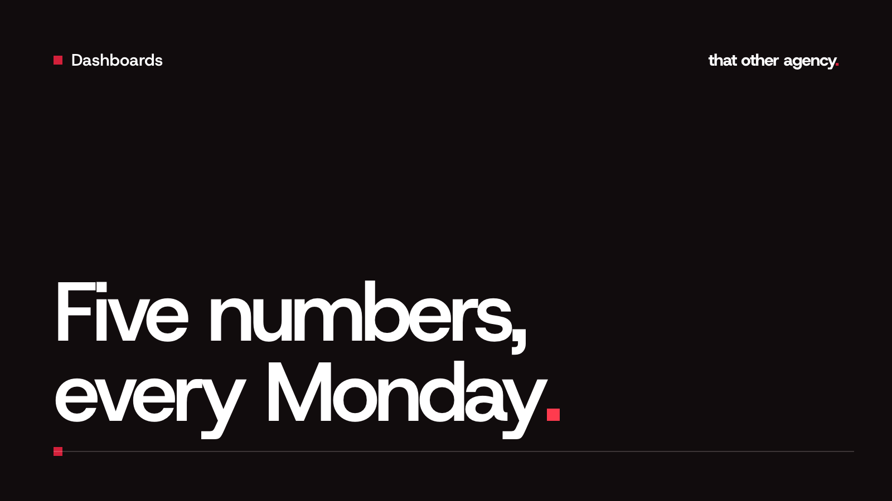

Dashboards
Recharge reporting: the five subscription numbers worth checking every week.

Recharge gives a subscription brand a lot of reports, and most founders end up staring at one of them: the Recharge subscription churn rate. It matters, but on its own it tells you that people are leaving, not why, and by the time a monthly figure moves the damage is a few weeks old. Here are the five numbers we would look at every week instead, what each one tells you, and what to do when it moves.
1. Active subscribers, and the net change
Start with the simplest number: how many active subscribers you had at the end of the week, and how that compares with the week before. Then break the change into its two halves, new subscribers in and subscribers lost.
A flat line can hide a lot. Gaining 80 and losing 80 looks the same as gaining 5 and losing 5, but the first means your ads are paying to refill a leaky bucket. If new subscribers are steady and the total still falls, the problem is retention, not acquisition, and more ad spend will not fix it.
2. Recharge subscription churn rate
Churn rate is the share of subscribers or subscriptions that ended in a period. Recharge reports two versions: one for subscribers (customers) and one for subscriptions. They differ when customers hold more than one subscription, so a customer who cancels one of two products counts in subscription churn but not subscriber churn. Pick one and stick with it.
The plain version of the sum is:
Monthly churn rate = subscriptions cancelled in the month ÷ active subscriptions at the start of the month
For example, with a made up 1,000 active subscriptions on the 1st and 60 cancelled during the month, churn is 6%. Recharge's own figure uses a more careful method that counts subscribers across each day of the period, so it will not match this exactly, but the trend should move the same way.
Two things make churn easier to read:
- Split it by delivery frequency. Recharge does not do this for you. A monthly plan has twelve chances a year to cancel, a quarterly plan has four, so mixing them blurs the picture.
- Watch the weekly count, judge the monthly rate. Weekly rates jump around. A rising count of cancellations each Monday is the early warning; the monthly rate tells you whether it stuck.
3. Failed payments, or passive churn
Not every lost subscriber chose to leave. Cards expire, get replaced after fraud or hit their limit, and the charge fails. That is usually called passive churn, as opposed to active churn where the customer cancels. Recharge's subscriber dashboards separate the two, and it is worth keeping them apart in your own reporting too.
Each week, check:
- How many charges failed. A sudden jump can point to a payment setup problem rather than unhappy customers.
- How many were recovered. Recharge retries failed charges and can email customers to update their card. Whatever stays unpaid at the end of those retries becomes churn.
Passive churn is often the cheapest churn to fix, because these customers never meant to leave. Clearer card update emails, a text message where you have permission, and a sensible retry schedule can win many of them back.
4. Cancellation reasons
When customers cancel through the customer portal, Recharge can ask them why. Those answers are the most useful thing in your subscription data, because they tell you what to change. Read them every week, including the free text, and group them into a handful of themes:
- Too much product. Usually a frequency problem. Offer a skip, a longer gap between deliveries or a smaller size before they leave.
- Too expensive. Check whether these customers came in on a heavy first order discount and are now paying full price for the first time.
- Did not work for me. A product or expectation problem. Compare it with what your ads and product pages promise.
5. New subscribers who reach a second charge
The most important retention moment for most subscription brands is the second charge. Plenty of people sign up for a discounted first box and leave before paying again. If your ads bring in that kind of customer, your acquisition numbers can look healthy while the business shrinks.
Take everyone who started a subscription in a given week, then check a few weeks later, once their second charge date has passed, how many paid it. Track that percentage by start week. If it drops after you change an offer, a landing page or an ad, you have found the cause.
This also connects your subscription data to your ad spend. Our guide to working out new customer CAC on Shopify covers what a new customer costs; this number tells you how many of them stay long enough to pay that back.
A 15 minute Monday routine
- Write down active subscribers, new in and lost for the week.
- Split the lost into cancelled and failed payments.
- Read every cancellation reason and add them to your tally.
- Check the second charge rate for the start weeks that have just come due.
- On the first Monday of the month, work out churn by frequency for the month before.
Keep it in one place next to your ad spend and Shopify sales, so you can see whether a bad week came from fewer new customers, more cancellations or a pile of failed cards.
How we report it for clients
Our custom dashboards pull Recharge alongside Shopify and the ad platforms, so these five numbers sit on one screen next to spend and sales, updated every day. You can see how a dashboard looks with made up data in our live dashboard demo. If you would like the same for your brand, every build starts with a consultation and a fixed quote.
Frequently asked questions
What is a good subscription churn rate?
It depends heavily on the product, the price and how often it ships, so a single benchmark is not much use. Compare your rate with your own last six months, split by delivery frequency, and judge it against what a subscriber is worth to you.
Should skips count as churn?
No. A skipped delivery keeps the subscription active, so it is not churn. It is worth counting separately, though: a lot of skips can mean the frequency is wrong, and some skippers go on to cancel.
Why does my churn rate not match Recharge?
Recharge counts subscribers across every day of the period rather than only at the start, and it reports subscriber and subscription churn separately. A simple start of month sum will land close, but not on the same figure. Use one method consistently.